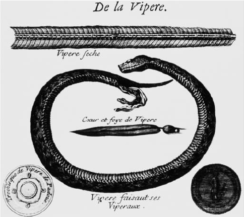

这里引用的是《动物结构》的开头一章，亚里士多德在这里宣布了他的自然目的论观点。自然界行为中的终极因不少于人类技能的创造行为中的终极因，为了解释自然现象我们必然要求助于“为了某事的因”。使用终极因进行的解释就是用“为了某种好处”进行的解释；因为如果鸭子长有带蹼的脚是为了游泳，那么长有带蹼的脚就是好的，即对鸭子有好处。终极因是第一位的，因为它们被认为是“（做）某事的理由”：能够游泳是一只鸭子本质特征的一部分，那么要恰当描述成为一只鸭子有哪些特征，就得提到游泳。终极因不是出于理论考虑而强加给自然界的，它们是在自然界里所观察到的：“我们看到不止一种类型的因。”［“目的论”这个词来源于希腊单词telos，这就是亚里士多德用来指“目的”（goal）的词：目的论解释就是应用目的或终极因进行的解释。］
亚里士多德在他的生物学著作里不断地寻求终极因。为何牙齿与动物结构的其他坚硬部分不一样，一直在不断地生长？
还有，人类为何有双手？
终极因经常与“必然性”形成对照，尤其是与动物的物质本性或动物结构所造成的限制形成对照。但是即使在运用必然性解释现象的地方，仍然有使用终极因进行解释的余地。为何水鸟长有带蹼的脚呢？
亚里士多德的目的论有时可用一句口号来概括：“大自然不会徒劳地做任何事情”；他本人也常常用格言来表述这个意思。但是，尽管亚里士多德认为终极因遍及自然界，实际上不是每个地方都有终极因。“肝脏中的胆汁是一种残留物，没有什么用途——就像胃和肠道里的沉淀物一样。大自然有时甚至把残留物用于某些有利的目的；但是那不是在所有情形中寻求终极因的理由。”《动物的生殖》第五卷讨论的都是这类无目的性的动物结构。
自然行为和自然结构通常都有终极因；因为大自然不会徒劳地做任何事情。但是终极因受到必然性的限制：自然“在各种情况下”往最好处去做。而且，有时完全找不到终极因的存在。
《物理学》包括了许多支持自然目的论的论证。其中的一些论证依靠的是很有亚里士多德特色的概念——“技艺模仿自然”或者说“技艺是对自然的模仿物”：如果我们能在人工技术的产品中看到终极因，那么我们更能在自然界所造的事物中发现这些终极因。另一个观点进一步论证了《动物结构》里的这个主张——“我们看到”自然界中的终极因。
我们“看到”自然界里的各种终极因了吗？我们究竟应该看什么呢？“为了”和“为的是”短语似乎主要用于解释有意识的介质的目的性行为。那么，亚里士多德是在把介质性和目的性都赋予自然现象吗？他没有把目的性赋予动物和植物，也没有假定它们行为的终极因就是它们自己的企图。鸭子没有计划要长出带蹼的脚，植物也没有设计它们的叶子的功用。亚里士多德的目的论不是幼稚地把目的性赋予植物。那么，是否亚里士多德没有把目的性赋予自然生物但却赋予大自然了？在好几个段落里，亚里士多德都把自然看做自然界的能工巧匠；在这些段落里，我们倾向于把他说的自然（nature）首字母大写。比如这句话：“就像一个好管家，自然没有浪费任何可以派上好用场的东西。”对这样的段落不能轻描淡写地加以拒绝。但是，自然这一能工巧匠不可能完全是亚里士多德目的论中的自然；因为在生物学著作里进行详细的目的论解释时，他极少提到大自然的计划或一个伟大设计者的意图。
如果我们不用有意图的计划来解释亚里士多德的目的论，那么又如何来解释它呢？来看一看下面一段话：
如果蛇的精液必须在绕身体一周后再蜿蜒而行通过一对睾丸，它就会变冷、繁殖力降低——这就是蛇为什么没有睾丸的原因。（它们没有阴茎是因为阴茎自然地要位于两腿之间，而蛇没有腿。）为了成功地生育，蛇必须没有睾丸：如果不生育它们就不会生存繁衍，如果有了睾丸它们就不能生育。这就解释了蛇没有睾丸的原因。这种解释在内容上是异想天开的，但也是受人尊敬的那种解释。
总的说来，动物和植物的多数结构特征和行为特征都有某种功能。换言之，它们是用于执行一些对该生物来说至关重要的或至少是有用的生理活动：如果该生物不进行这样的生理活动，它就不能生存下去或者说生存很困难。要寻求对动物生命的了解，我们必须掌握与该动物结构和行为有关的各种功能。如果你仅知道鸭子有带蹼的脚并知道它们会游泳，你还没有完全认识它们：你还要明白一点，脚蹼有助于游泳，并且游泳是鸭子生命的一个基本组成部分。

图19“蛇在交配时相互交织地粘在一起；而且据我观察，它们没有睾丸和阴茎——没有阴茎是因为它们没有腿，没有睾丸……是因为它们身体的长度。”
亚里士多德对此的表述是，“鸭子为何有带蹼的脚？”这一问题的一个答案是“为了游泳”。他的“为了……”听起来有点古怪，原因只在于我们首先把“为了”与意图性行为联系在一起了。亚里士多德把它首先与功能相联系，并且从本质上来看待功能。他无疑是正确的。自然界事物确实包含功能性结构，并表现出功能性行为；没有意识到这类功能的科学家也就忽略了他所研究的大部分内容。
“大自然不会徒劳地做任何事情”是科学研究的规定性原则。亚里士多德知道，大自然的某些方面是没有功能可言的。但是他承认，看清功能对理解自然非常关键。他关于自然之筹划性的格言不是天真的迷信，而是对自然科学家中心任务的提醒。